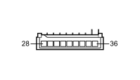

M066A DRIVER'S DOOR CONTROL UNIT (NPG) (LEFT FRONT DOOR)
- Path
- Electrical equipment > 3 CONNECTORS > M INTERMITTENT AND TIMED ELECTRONIC DEVICES > M066 DRIVER'S DOOR CONTROL UNIT (NPG) > M066A DRIVER'S DOOR CONTROL UNIT (NPG) (LEFT FRONT DOOR)
- Kind
- connector pinout (pin -> wire colour -> other end)
- Applies to
- all engines; all production periods
- Interactive page
- https://sloeber94.github.io/elrnDB-fCrm/en/#/194005289
Applies to: all engines; all production periods

Wiring | Colour |
|---|---|
BIANCO (white) |
Pin | Cable | Destination | |||
|---|---|---|---|---|---|
Sec.. | Colour | Node | Connect. | Pin | |
28 | 0,35 | AN (light blue with black stripe) | See H044A ELECTRIC WINDOW CONTROLS ON FRONT DRIVER'S DOOR (LEFT FRONT DOOR) | 9 | |
29 | 0,35 | AV (light blue with green stripe) | See H044A ELECTRIC WINDOW CONTROLS ON FRONT DRIVER'S DOOR (LEFT FRONT DOOR) | 7 | |
30 | 0,35 | CB (orange with white stripe) | See H044A ELECTRIC WINDOW CONTROLS ON FRONT DRIVER'S DOOR (LEFT FRONT DOOR) | 8 | |
31 | 0,35 | BH (white with grey stripe) | See H044A ELECTRIC WINDOW CONTROLS ON FRONT DRIVER'S DOOR (LEFT FRONT DOOR) | 5 | |
32 | 0,35 | AB (light blue with white stripe) | See H044A ELECTRIC WINDOW CONTROLS ON FRONT DRIVER'S DOOR (LEFT FRONT DOOR) | 4 | |
33 | 0,35 | NZ (black with violet stripe) | See H044A ELECTRIC WINDOW CONTROLS ON FRONT DRIVER'S DOOR (LEFT FRONT DOOR) | 6 | |
34 | 0,35 | LS (blue with pink stripe) | 16 | ||
35 | 0,35 | BM (white with brown stripe) | 15 | ||
36 | 0,35 | BL (white with blue stripe) | See H044A ELECTRIC WINDOW CONTROLS ON FRONT DRIVER'S DOOR (LEFT FRONT DOOR) | 3 | |
Topics linked from this page (3)
- 30 LEFT FRONT DOOR
- D030 DRIVER'S FRONT DOOR COUPLING
- H044A ELECTRIC WINDOW CONTROLS ON FRONT DRIVER'S DOOR (LEFT FRONT DOOR)